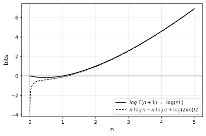
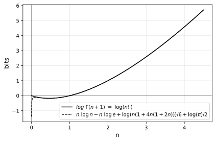
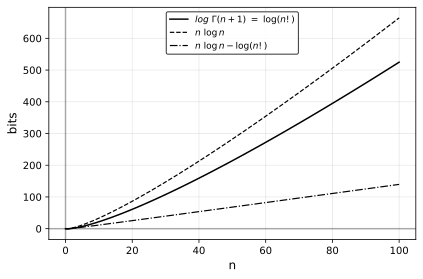
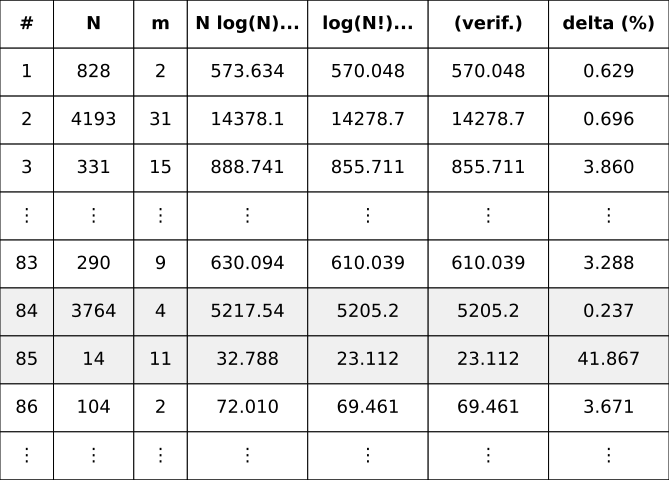

In data compression with arithmetic coding, the length of the produced code is within 2 bits of the information content of the encoded data, which you get from the probability:
\[I(x)=-\log P(x).\]
where \(P(x)\) is the probability of \(x\). The information content of a sequence of events or symbols is just the sum of the information contents of each, just as the concatenated codes will have length equal to the sum of individual codes.
Information of the Categorical MLE
For a sequence of \(N\) symbols with individual frequencies \(n_0, n_1, n_2, ...\), such that
\[\sum_i{n_i} = N,\]
the categorical model giving the shortest code length is the one where the probability assigned to each symbol is proportional to its frequency in the data, i.e. the MLE (maximum likelihood estimator). If you work out the information content of the full sequence against its categorical MLE, it comes out to
\[\begin{align} I(\mathrm{\bf x}) &= -n_0 \log p(x_0) - n_1 \log p(x_1) - n_2 \log p(x_2) -\ ...\\[8pt] &= -n_0 \log \left(\frac{n_0}{N}\right) - n_1 \log \left(\frac{n_1}{N}\right) - n_2 \log \left(\frac{n_2}{N}\right) -\ ... \\[8pt] &= \left(\sum_i n_i\right) \log N -n_0 \log n_0 - n_1 \log n_1 - n_2 \log n_2 -\ ... \\[8pt] &= N \log N -n_0 \log n_0 - n_1 \log n_1 - n_2 \log n_2 -\ ... \ \end{align}\]
This formula, then, is the length of the arithmetic code of a sequence if every symbol is predicted according to the MLE categorical fitted to the sequence.
Note, however, that using the same categorical distribution, it would be easy to improve the likelihood of symbols (and thus code length) if the model was updated after each occurrence of a symbol, docking the count of that symbol in our probability distribution, effectively maintaining a more accurate MLE of the tail of the sequence rather than the MLE of the whole sequence.
The distinction between a “static” or “updating” categorical modeling a sequence of symbols is essentially the one between sampling a distribution “with replacement” (keeping the distribution the same for the next sample) or “without replacement” (removing the sampled element from the distribution).
Categorical Without Replacement
I can’t derive the equivalent formula for the information content of the categorical without replacement, but a proof that it is equal to
\[\log(N!) -\log(n_0!) - \log(n_1!) - \log(n_2!) -\ ...\]
is relatively straightforward.
By induction from the end of the sequence towards the start:
\(\texttt{Proof:}\)
Case N=1: For the sequence with 1 element, \(N = 1\) and \(n_0 = 1\), so
\[\begin{align} \log(N!) -\log(n_0!) &= \log(1!) - \log(1!) \\ &= 0, \end{align}\]
which corresponds to the information content of a symbol with probability 1:
\[\begin{align} I(x_0) &= -\log P(x_0)_1 \\ &= -\log 1 \\ &= 0. \end{align}\]
Case N+1: For an additional symbol \(x_i\), given that the length of the code for the rest of the string is
\[\log(N!) -\log(n_0!) - \log(n_1!) - \log(n_2!) -\ ...,\]
for any count \(n_i\) of that symbol in the rest of the string (including 0 for a new symbol), the additional information from that symbol is a function of its probability at that point:
\[\begin{align}I(x_i)_{N+1} &= -\log P(x_i)_{N+1} \\[8pt] &= -\log \left(\frac{n_i+1}{N+1}\right) \\[8pt] &= \log(N+1) -\log (n_i+1)\end{align}\]
which distributes into the factorials by the product property of logarithms:
\[\begin{align} &~ \log(N!) + \log(N+1) -\log(n_0!) -\ ...\ -\log(n_i!) - \log(n_i+1) -\ ... \\[8pt] &=\ \log(N! \cdot (N + 1)) -\log(n_0!) -\ ...\ - \log(n_i! \cdot (n_i + 1)) -\ ... \\[8pt] &=\ \log((N + 1)!) -\log(n_0!) -\ ...\ -\ \log((n_i + 1)!) -\ ...,\end{align}\]
which is the formula with updated parameters.Of note is that the order in which symbols appear in the sequence (e.g. whether identical symbols are grouped together at the beginning, clearing them out for the rest of the inference, or not) has no bearing on the information content of a without replacement strategy. It is uniquely determined by the length (\(N\)) and bin sizes (\(n_0, n_1, n_2, ...\)) with no regard to the actual structure of the sequence.
Discussion
So how much smaller is the information of a sequenced modeled without replacement:
\[\log(N!) -\log(n_0!) - \log(n_1!) - \log(n_2!) -\ ...\]
than one modeled with replacement:
\[N \log N -n_0 \log n_0 - n_1 \log n_1 - n_2 \log n_2 -\ ...\\[10pt]\]
Obviously, we have that, for \(n > 0\):
\[\log(n!) < n\log n,\]
because \(n\log n = \log(n^n)\) and \(n! < n^n\). Asymptotically, however:
\[O(\log(n!)) = O(n\log n)\]
as demonstrated by Stirling’s approximation of \(\log(n!)\) where the leading terms is \(n\log n\):
\[\log(n!) = n\log n - n\log e + \frac{1}{2}\log(2\pi n) + O\left(\frac{1}{n}\right)\]

or Ramanujan’s more precise approximation:
\[\begin{align} \log(n!) =~&n\log n - n\log e \\ &+\frac{1}{6}\log(n(1+4n(1+2n))) \\ &+\frac{1}{2}\log \pi + O\left(\frac{1}{n^3}\right) \end{align}\]

but these additional terms correct a mostly constant factor \(n\log e\) between the two functions:

How this difference affects different parametrizations of a categorical is less obvious.
Experiments on a small sample of random strings of different lengths (\(N\)) and number of symbols (\(m\)) reveals that with replacement contains anywhere from 0.2% (on the longest strings with the smallest alphabets) to 40% (on the smallest strings of mostly distinct symbols) more information than without replacement (code, full table):
$$$$ 
$$$$
where the information content is computed with and without replacement according to the formulae and the without value is confirmed through the sum of the individual information of each symbol (simulating an updating model), validating our proof.
Since larger values of \(N\) increase the information content of strings of both with or without replacement, the difference comes from whether the \(N\) values are distributed between fewer distinct symbols (less change to the distribution per update, less difference between methods) or more uniformly between many values (more change to the distribution per update, more difference between methods).
Combinatorial View
At this point, the combinatorial interpretation begs to be mentioned.
Our formula for information content without replacement is simply equal to the \(\log\) of the multinomial coefficient:
\[\begin{align} I(\mathrm{\bf x}) &= \log(N!) - \log(n_0!) - \log(n_1!) - \log(n_2!) -\ \ldots \\[8pt] &= \log \left(\frac {N!}{n_0!\ n_1!\ n_2!\ \cdots}\right) \\[8pt] &= \log {N \choose n_0,n_1,n_2,\ldots},\ \end{align}\]
which is the number of ways a sequence of \(N\) objects with equivalence classes of sizes \(n_0, n_1, n_2, ...\), where \(N = \sum_i{n_i}\).
A derivation based on probabilities and mutation of a probabilistic model reduces to the \(\log\) of the number of possible strings given the same parameters.
Information From Variety
This motivates a simpler description of information.
If the probabilistic model is equivalent to one with \(N\) equiprobable states, the denominator position of the size cancels out the negation of the \(\log,\) leaving only:
\[\begin{align}I(x) &= -\log P(x) \\[5pt] &= -\log \left(\frac{1}{N}\right) \\[5pt] &= \log N. \\[5pt] & \end{align}\]
This applies more generally to the information of a variety, which is simply:
\[I(x) = \log \left(V(X)\right),\]
where the variety \(V(X)\) is the total number of states a system \(X\) can find itself in.
$$$$
Even when the probabilities are not equal, but derived from frequencies:
\[\begin{align} I(x_i) &= -\log P(x_i) \\[5pt] &= -\log \left(\frac{n_i}{N}\right) \\[5pt] &= \log N - \log n_i. \end{align}\]
the information content of a part (\(n_i\)) from a whole (\(N\)) can be interpreted as the information to specify one among the whole (\(\log N\)) minus the information to specify one among the part (\(\log n_i\))—like an interval between \(n_i\) and \(N\) in \(\log\)-space.